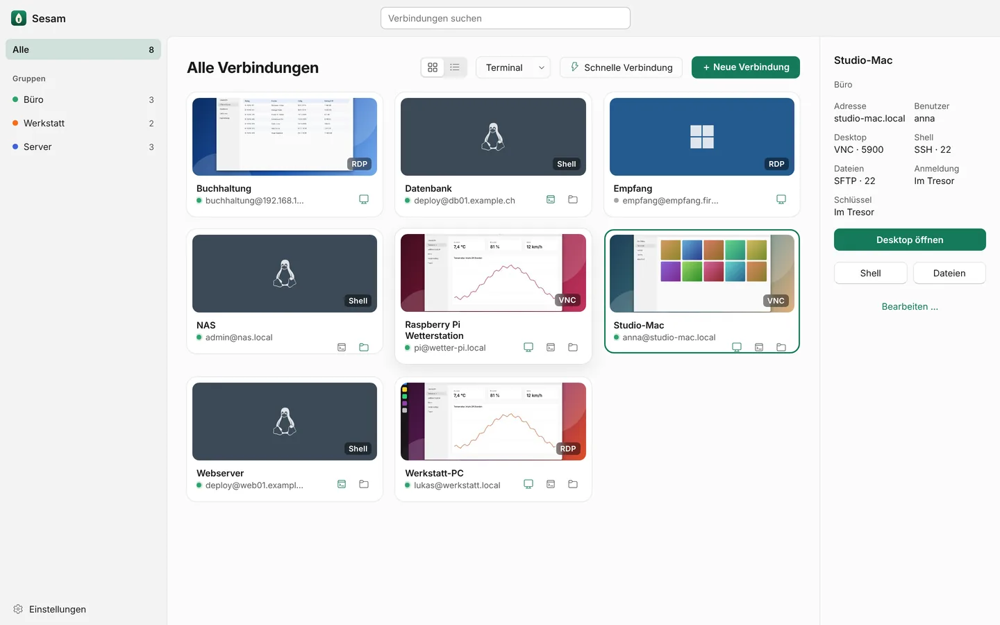
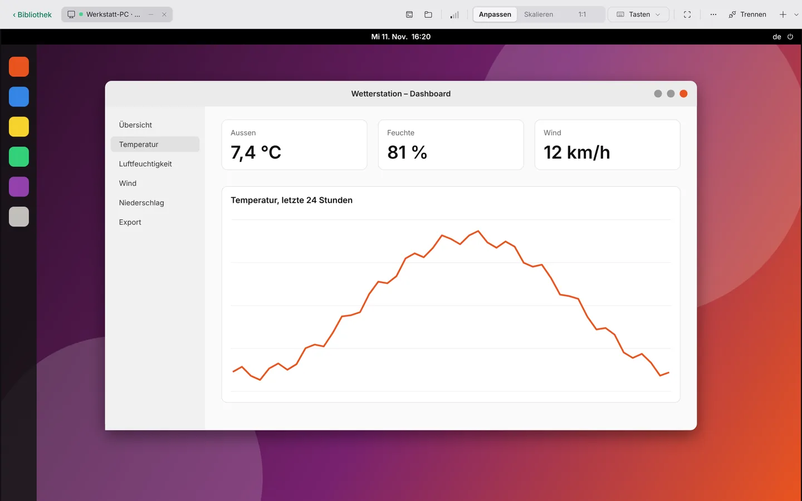
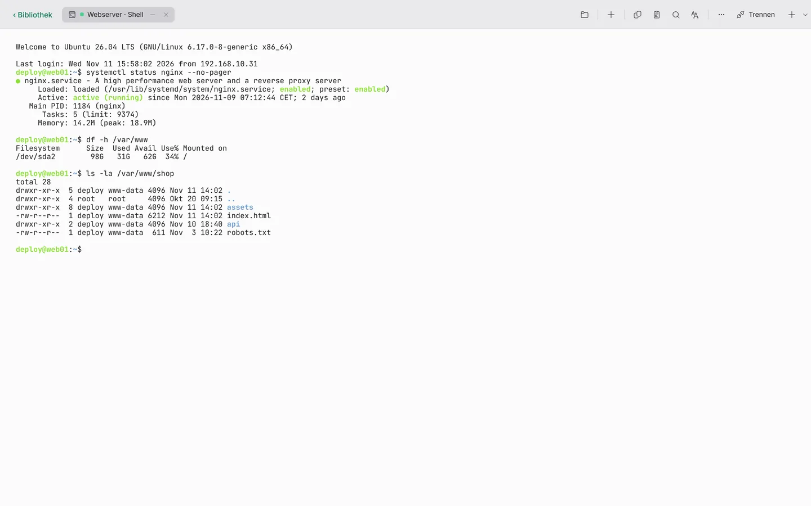
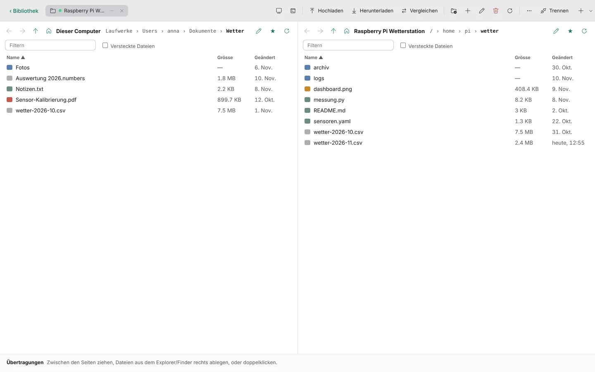
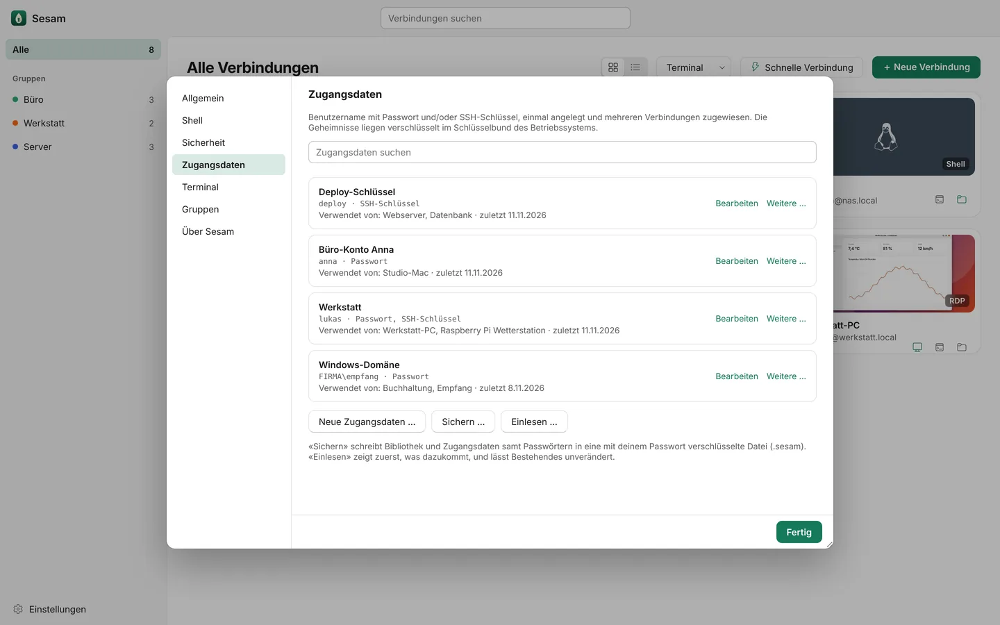
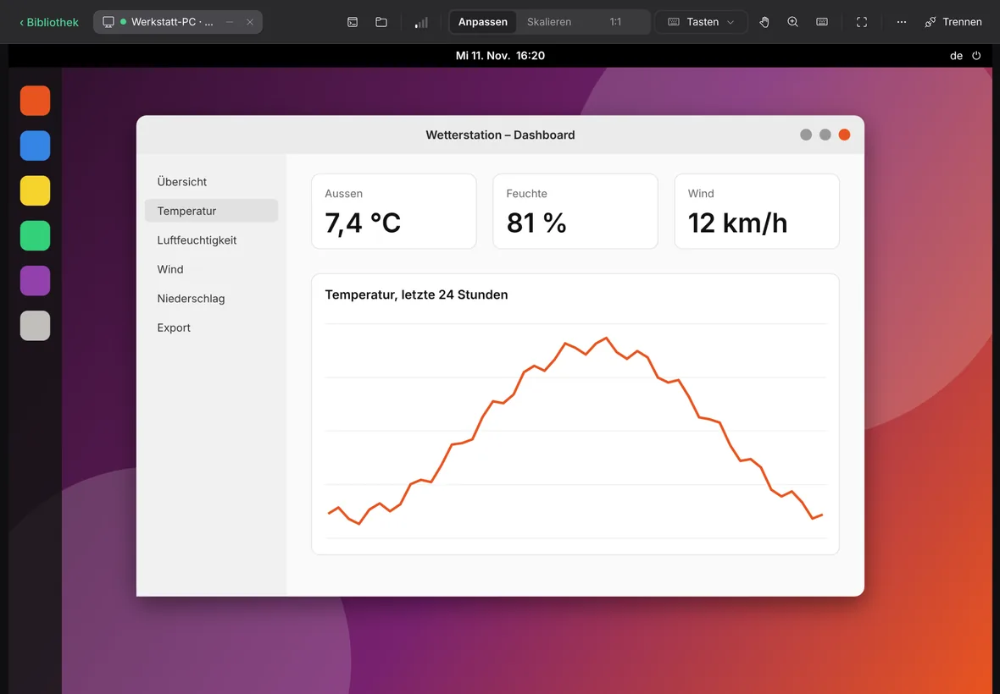

Gemeinsame Zwischenablage
Text in beide Richtungen, Bilder und Dateien über SFTP. Der Verlauf merkt sich die letzten 25 Einträge.
Bildschirm, Shell und Dateien deiner Macs, Windows-PCs, Linux-Server und Raspberry Pis in einer App. Für Mac, Windows und iPad.

Ein Gerät, drei Türen
Ein Eintrag der Bibliothek ist ein Gerät, nicht ein Protokoll. Sesam fragt beim Anlegen die üblichen Ports ab und schaltet ein, was antwortet. In der Sitzung wechselst du mit einem Klick zur anderen Tür desselben Rechners.

RDP für Windows und GNOME, VNC für Mac und Raspberry Pi. Die Auflösung folgt deinem Fenster.

SSH mit Passwort, Schlüssel oder SSH-Agent. Den Hostschlüssel bestätigst du einmal, danach prüft Sesam ihn bei jeder Verbindung.

Zwei Spalten, Ziehen und Ablegen, eine Liste der Übertragungen. Über SFTP, SCP, FTP oder FTPS.
Durchdacht
Sesam erledigt, wofür du sonst drei Programme und eine Notiz mit Ports brauchst.
Text in beide Richtungen, Bilder und Dateien über SFTP. Der Verlauf merkt sich die letzten 25 Einträge.
Grüner Punkt heisst erreichbar. Schläft ein Rechner, weckt ihn Sesam per Wake-on-LAN und verbindet, sobald er antwortet.
Klappt eine Verbindung nicht, prüft Sesam Schritt für Schritt Name, Netz, Port, Dienst, Anmeldung und Zertifikat und sagt, was fehlt.
Nur SSH eingerichtet? Sesam schaltet die Bildschirmfreigabe auf macOS, Raspberry Pi OS und Ubuntu ein und zeigt vorher jeden Befehl.
⌘⇧P bzw. Strg+Umschalt+P: Namen tippen, Enter. Jede Verbindung, jede Aktion, ohne Maus.
WLAN gewechselt, Deckel zu? Sesam verbindet RDP selbst neu und Windows setzt die Sitzung fort.
Adresse eingeben und los, ohne Eintrag in der Bibliothek. Das Passwort bleibt nur im Arbeitsspeicher.
RDP und VNC auf Wunsch durch einen SSH-Tunnel. Der Desktop-Dienst muss nicht offen im Netz stehen.
VNC über wayvnc, Shell und Dateien. Die Shell-Leiste zeigt Modell, Temperatur und Unterspannung des Pi.
Sicherheit
Sesam spricht direkt mit deinen Rechnern. Dazwischen steht kein Dienst, der mitliest, und nichts, wofür du ein Konto brauchst.

Mac, Windows, iPad
Auf dem Mac mit Menüleiste, SF Symbols und ⌘-Kürzeln, unter Windows mit eigener Titelleiste und Fluent-Symbolen, auf dem iPad für Finger, Stift und Tastatur. Jede Funktion gibt es auf jeder Plattform, wo das System es zulässt.

Signiert und von Apple notarisiert. Bewusst nicht im Mac App Store: Dessen Sandbox verbietet das lokale Terminal, Tastenkürzel an den entfernten Rechner und freie Dateifenster.
Für Mac ladenFür Windows 10 und 11. Tastenkürzel gehen an den entfernten Rechner, wie bei der Remotedesktopverbindung von Windows.
Für Windows ladenAb iPadOS 16. Für Finger, Trackpad und Tastatur, mit eigener Bildschirmtastatur für Sondertasten wie Strg, Alt und F1 bis F12.
Bald im App Store| Funktion | Mac | Windows | iPad |
|---|---|---|---|
| Desktop über RDP und VNC | Ja | Ja | Ja |
| SSH-Shell und Dateien | Ja | Ja | Ja |
| Zugangsdaten im Schlüsselbund | Ja | Ja | Ja |
| Gemeinsame Zwischenablage | Ja | Ja | Im Vordergrund |
| Systemkürzel an den entfernten Rechner | Ja | Ja | Ohne ⌘Tab, ⌘Leertaste |
| Lokales Terminal | Ja | Ja | Nein |
| Verbindung im Hintergrund | Ja | Ja | Endet nach kurzer Zeit |
Fragen
Eine quelloffene Fernzugriffs-App für Mac, Windows und iPad. Sie zeigt den Bildschirm entfernter Rechner über RDP oder VNC, öffnet eine SSH-Shell und überträgt Dateien über SFTP oder FTP. Jeder Rechner ist ein Eintrag in einer Bibliothek, mit allen drei Zugängen.
Mit Windows-PCs und -Servern (RDP), Macs mit Bildschirmfreigabe (VNC), Ubuntu mit GNOME Remote Desktop (RDP, auch unter Wayland und am Anmeldebildschirm), Linux mit xrdp oder wayvnc, Raspberry Pi und jedem Server mit SSH oder FTP.
Nein. Sesam verbindet sich direkt mit deinen Rechnern, im lokalen Netz, über VPN, einen SSH-Sprungserver oder ein RD-Gateway. Es gibt kein Konto, keinen Vermittlungsserver und keine Telemetrie.
Verschlüsselt im Schlüsselbund des Betriebssystems: im macOS- bzw. iPadOS-Schlüsselbund und in der Windows-Anmeldeinformationsverwaltung. Die Liste der Verbindungen enthält keine Geheimnisse. Für den Umzug auf ein anderes Gerät schreibt Sesam eine mit deinem Passwort verschlüsselte Sicherung.
Ja. Sesam verbindet sich über RDP mit GNOME Remote Desktop, auch mit dem Anmeldebildschirm, und übernimmt danach die Sitzung. Ein Setup-Script richtet feste Ports pro Benutzer ein; Sesam startet es auf Wunsch selbst über SSH.
Die Sandbox des Mac App Store verbietet Funktionen, die Sesam ausmachen: das lokale Terminal, Tastenkürzel an den entfernten Rechner, Desktop-Verknüpfungen und freie Dateifenster. Darum gibt es die Mac-App als signierten und von Apple notarisierten Download von dieser Website.
iPadOS beendet Verbindungen kurz nachdem die App in den Hintergrund geht, behält Systemkürzel wie ⌘Tab für sich, gibt Dateien nur über die Dateien-App frei und erlaubt die Zwischenablage nur im Vordergrund. Ein lokales Terminal gibt es auf dem iPad nicht. Die iPad-App erscheint im App Store.
Unter der Mozilla Public License 2.0. Schriften und Symbole stehen unter ihren eigenen freien Lizenzen (Inter und JetBrains Mono: SIL Open Font License, Fluent System Icons: MIT).